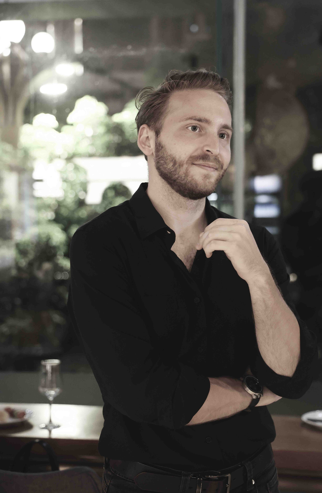
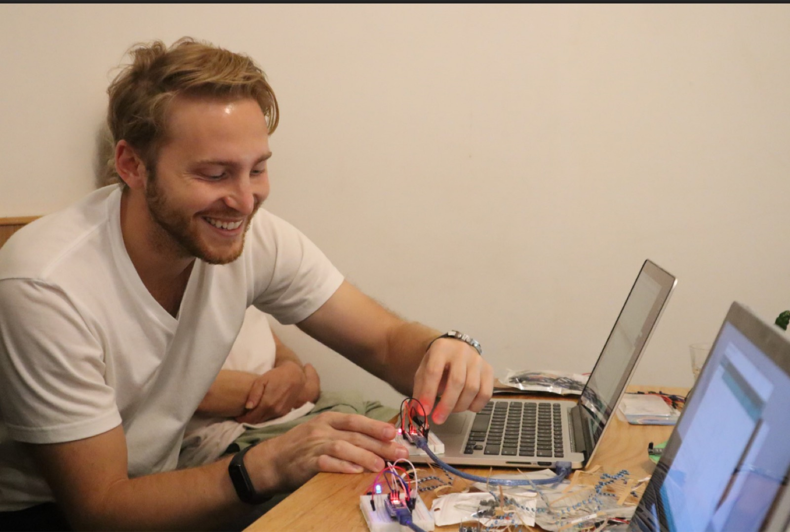
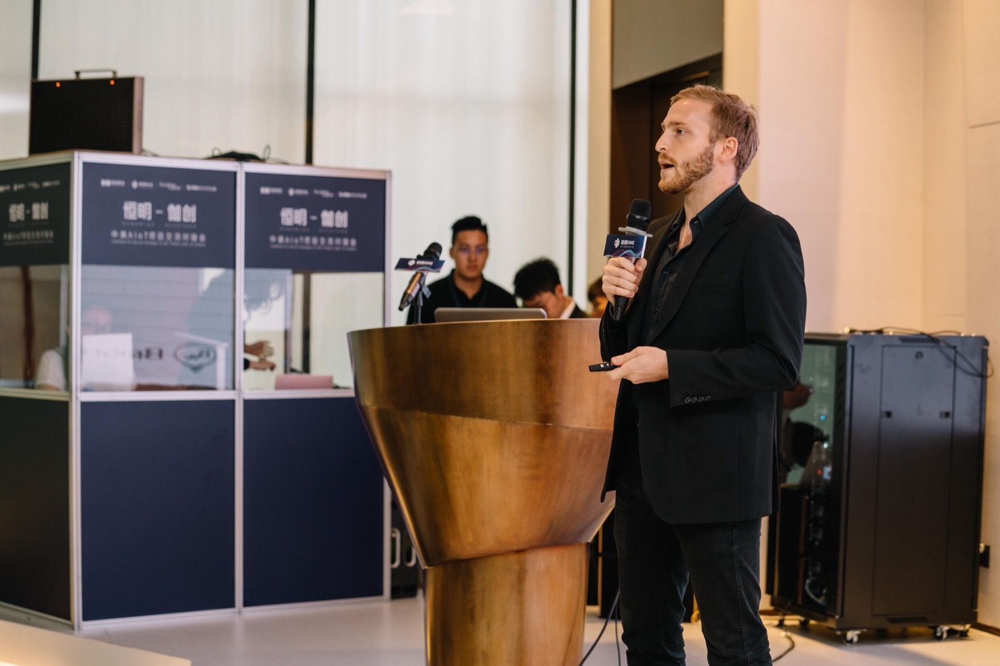
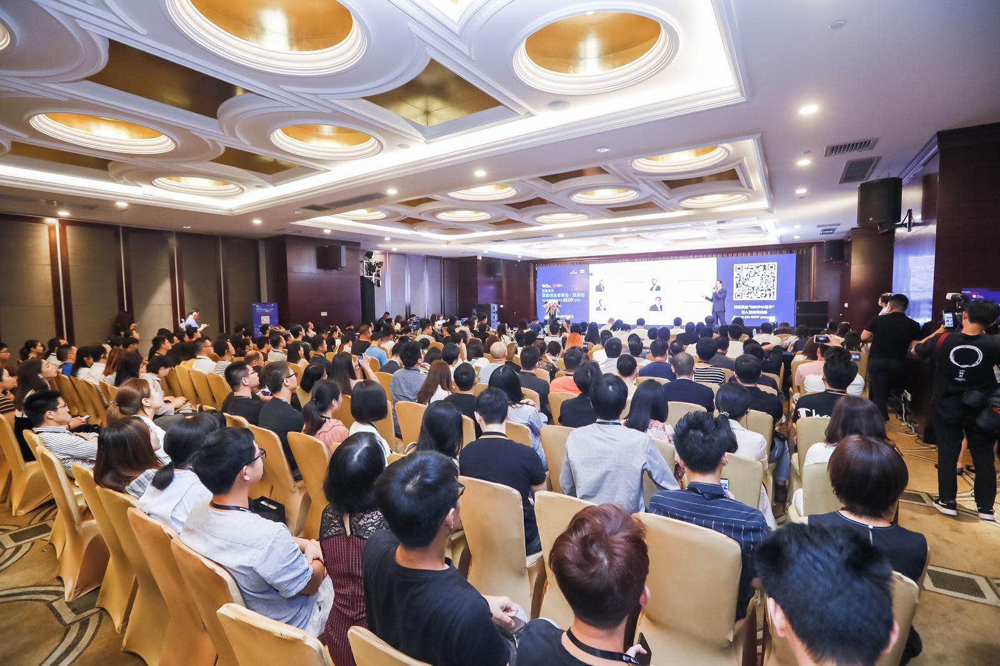
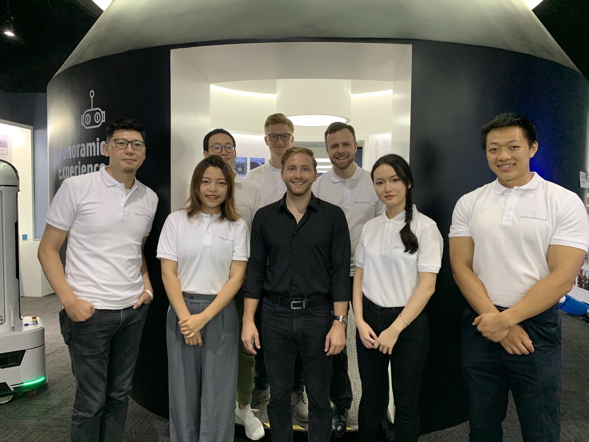
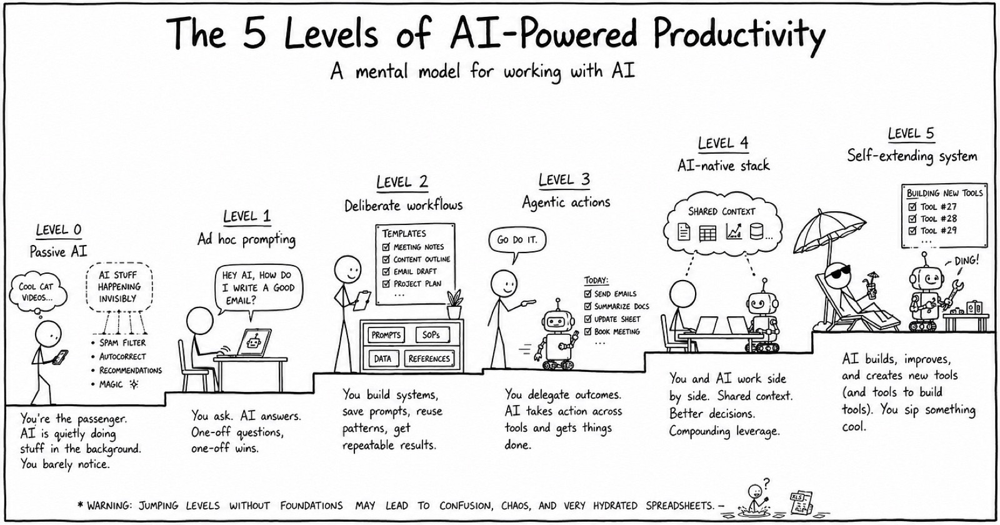

Building things,
one city at a time.
Repeat founder who loves turning ideas into products. Washington DC native, shaped by five years in Shenzhen, now putting down roots in New York.

Workspace
Now buildingFinally, see everything you and your agents are working on.
A Mac app where you and your AI agents share the same pages, databases and files. Nothing gets lost in a chat again, and you can see every change.
Free · for Macs with Apple silicon





I'm a repeat founder drawn to the intersection of technology, design, and what people actually need. I've built products from zero across hardware and software — from factory floors in China to launch days in the US.
Most of my time goes into Workspace, a Mac app where you and your AI agents work in the same pages, databases and files. It's how I run my own work: my notes, projects and plans are plain files on my Mac that my agents read and change right alongside me. It's a free beta, and I ship a new version every week or two.
I'm also helping a friend build emergency delivery drones for hospitals, for the trips where minutes matter: donor organs for transplants and blood for transfusions.
If you use AI agents for real work, I'd love for you to try Workspace in your browser and tell me what's missing.
